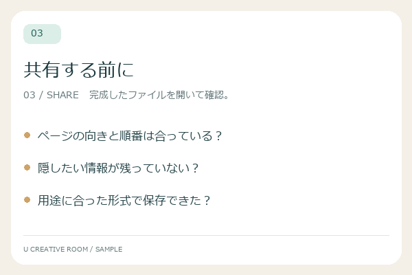
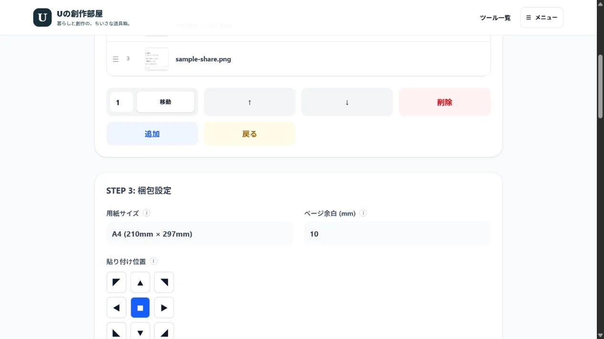

画像梱包（PDF）
複数の画像を1つのPDFファイルとして綴じます。フォルダ一括読み込み対応。 完成例と設定を見る ↓
STEP 3: 梱包設定
ツールの使い方・詳細説明
準備中...
使い方とヒント
写真や資料を、順番どおりのPDFに
撮影したメモ、イラスト集、説明用の画像を一つのPDFにまとめます。印刷するならA4やB5、画像の大きさを基準にしたいなら「1ページ1枚」を選びます。
- 画像を複数選択します。フォルダ選択は対応ブラウザで利用できます。
- 画像を選んで上下の移動ボタンで順番を調整します。ページ番号を指定して移動することもできます。
- 用紙サイズ・余白・配置を決め、「PDFを保存する」で保存します。
利用時のポイント
PNG・JPEG・WebPなど、ブラウザが読み込める画像に対応します。HEICやTIFFは事前にPNGかJPEGへ変換してください。余白が用紙の半分以上になると画像を配置できません。作成したPDFには文字認識や検索用のテキストは含まれません。
用紙サイズと元の画像サイズの違いは？
用紙を指定すると、画像が用紙の内側に収まるよう縦横比を保って調整されます。元の画像サイズでは96dpi相当でページの大きさを決めます。
WORKED EXAMPLE / PDFを開いて確認
3枚のメモを、渡せる資料に。
横長と縦長の画像を混ぜて、1枚ずつページに配置。同じ素材から、用紙と余白を変えた3種類のPDFを作りました。
このページ用に作成した架空の素材です。PDFは画像梱包ツールから保存した実出力で、いずれも3ページあります。
入力する画像と順番




用紙・余白で、どう変わる？

A4 / 余白10mm
210 × 297mm / 3ページ周囲に余裕を持たせた配置。3枚をA4の縦ページへまとめています。
サンプルPDFを保存 ↓
A4 / 余白0mm
210 × 297mm / 3ページ横長画像は用紙の左右まで広がります。縦横比を保つため、上下には白い余白が残ります。
サンプルPDFを保存 ↓
B5 / 余白10mm
182 × 257mm / 3ページ同じ画像をB5の内側へ配置。画面上では似て見えても、印刷時の用紙の大きさが違います。
サンプルPDFを保存 ↓画像は各PDFの1ページ目を表示しています。クリックするとPDF全体を開けます。ダウンロード前に個人情報の入力は不要です。
実際の設定画面

余白0mmでも、白い部分が残る理由
このツールは、画像を切り取らずに縦横比を保って用紙へ収めます。横長の画像と縦長のA4では形が違うため、指定余白が0mmでも上下に白い部分が残ります。画像と同じ形のページにしたい場合は「1ページ1枚（画像サイズ）」を選びます。
保存後に確認したい3つのこと
- ページ順：表紙や説明が意図した順番になっているか。
- 文字の読みやすさ：画像が用紙に収まっていても、小さな文字まで読み取れるとは限りません。印刷用は印刷サイズでも確認してください。
- 検索の可否：画像を配置したPDFなので、OCRや検索用の文字データは追加されません。見えている文字を選択・検索できない場合があります。
確認日：2026年10月26日。入力順は01→02→03。A4・B5は縦、中央配置で出力。
画像・入力内容はブラウザで処理します。サイト閲覧時の外部サービスについてはプライバシーポリシーをご確認ください。不具合を報告する →